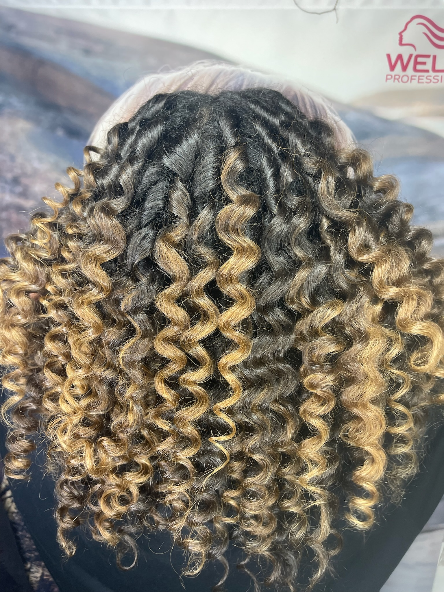

Cheveux texturés
Révéler la forme naturelle de vos boucles.
Une approche dédiée aux cheveux ondulés, bouclés et frisés : observer la texture, construire la forme, définir la boucle et vous donner les bons gestes pour l’entretenir à la maison.
Les tarifs et durées peuvent varier selon la longueur, la densité et le projet. Le montant exact est confirmé avant la prestation.

Pour qui ?
Les personnes qui veulent mieux comprendre leur texture naturelle, retrouver une forme, corriger une coupe peu adaptée aux boucles ou apprendre à obtenir davantage de définition.
Résultat recherché
Une forme plus équilibrée, des boucles mieux définies et des gestes plus adaptés à votre texture naturelle.
Déroulement
- Observation de la texture et de la forme
- Échange sur les habitudes et difficultés
- Coupe ou redéfinition selon la formule
- Soin ou gloss si l’expérience choisie le comprend
- Définition et conseils de coiffage
Ce qui est compris
- Conseil texture
- Coupe adaptée selon formule
- Définition
- Conseils d’entretien
Avant de venir
Suivez les indications de préparation communiquées avant le rendez-vous : observer vos boucles dans de bonnes conditions aide à construire une coupe plus juste.
Consultation préalable
Le diagnostic est intégré à certaines formules. Le contenu précis dépend de l’expérience choisie.
Questions fréquentes
Avant votre rendez-vous
Non. L’approche peut concerner les textures ondulées à frisées selon le projet.
Non, Florida propose plusieurs niveaux de prestation, dont des expériences plus complètes avec soin profond ou gloss.
Le diagnostic routine du site peut vous orienter, puis Agnès peut affiner les produits selon votre texture et votre historique.